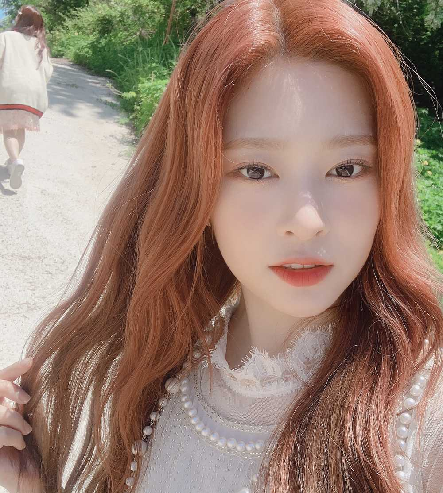

사진 좀 마음에 안들었는데 걸어가는 친구가 너무 귀여워서 지울 수 없었어요ㅋㅋ!!
오늘은 울 기요미 나코 생일이에용!!
진짜 전 나코가 세상에서 가장 귀엽다고 생각합니당ㅎㅎ
막상 마주 보면 살짝ㅎㅎ부끄럽다고 해야 하나
그래서 평소에 잘 표현 못 하지만..!
いつも足りない私を配慮してくれてありがとう!!
最初は可愛いと思ったけどお前は本当に格好良い友達だと思う。
そして星を抱いているような君の目がとても好き
向き合ってると星が溢れる 夜空の下で海辺を歩く気持ちになる😊
声さえきれいな なこ!!一生幸せにしよう!💕💕💕💕
最後にもう一度,お誕生日おめでとう🎂🎊🎉